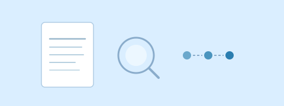
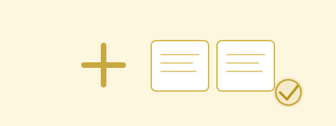

Use cases
Get started by checking out some of the use cases Tanzu Platform can provide.
Assess & Rationalize
Assess your applications for viability for deployment on to Tanzu Platform.

AI-Ready delivery
Accelerate the development, deployment, and management of AI-powered applications.
Secure content and services
Unlock the power of secure images and enterprise service offerings with Tanzu Platform.

Already have Tanzu Platform deployed?
Connect this vCenter to existing Tanzu Hub
If you already have Tanzu Hub deployed in your environment, you can connect this vCenter instance to leverage your existing Tanzu Platform infrastructure.
vCenter
Tanzu Hub